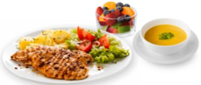

Departamento Alimentar
EMENTA REFEIÇÕES CANTINA GUALTAR (GRILL) - EMENTA DE 01 A 05 MARÇO DE 2021
SEGUNDA
TERÇA
QUARTA
QUINTA
SEXTA
01/mar
02/mar
03/mar
04/mar
05/mar
Sopa de feijão vermelho com
Sopa
Creme de ervilhas
Sopa de grão de bico
Sopa juliana
Creme de cenoura
feijão verde
Tranches de vitelão
Perca grelhada com molho
Prato
Massa carbonara
Frango assado
Feijoada de marisco
A
L
estufadas com cogumelos
de limão e hortelã
M
O
Ç
Batatinha no forno com
O
Acompanhamento 1
Arroz de cenoura
-
Batata frita
Arroz branco
azeite e alho
Salada de alface, cenoura e
Acompanhamento 2
Brócolos cozidos
Couve de Bruxelas salteada
Salada de tomate
-
tomate
Sopa
Sopa de espinafres
Creme de tomate
Sopa de feijão vermelho
Sopa de legumes
Sopa de curgete
Feveras de porco grelhadas
Prato
Peixe à Gomes de Sá
Atum grelhado
Hambúrguer à Grill
Bife de peru grelhado
J
com cebolada
A
N
T
A
R
Acompanhamento 1
-
Arroz dourado
Batata cozida
Arroz ao alho
Esparguete à Italiana
Salada de alface, pepino e
Alho francês, cenoura e
Salada de tomate com
Acompanhamento 2
Feijão verde cozido
Salada de alface e couve roxa
pimentos
couve branca salteada
azeitonas
1 - Por razões relacionadas com os abastecimentos, as ementas poderão ser alteradas
IT.91-08
Pág. 1 /1